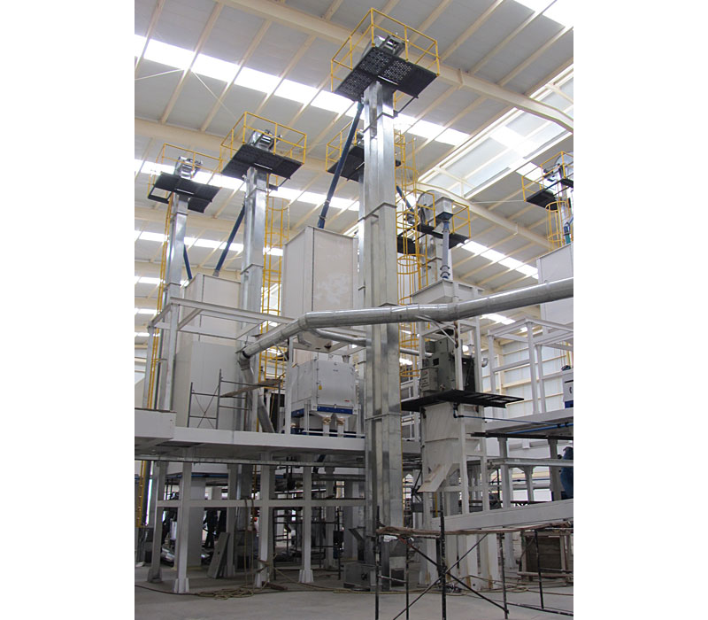
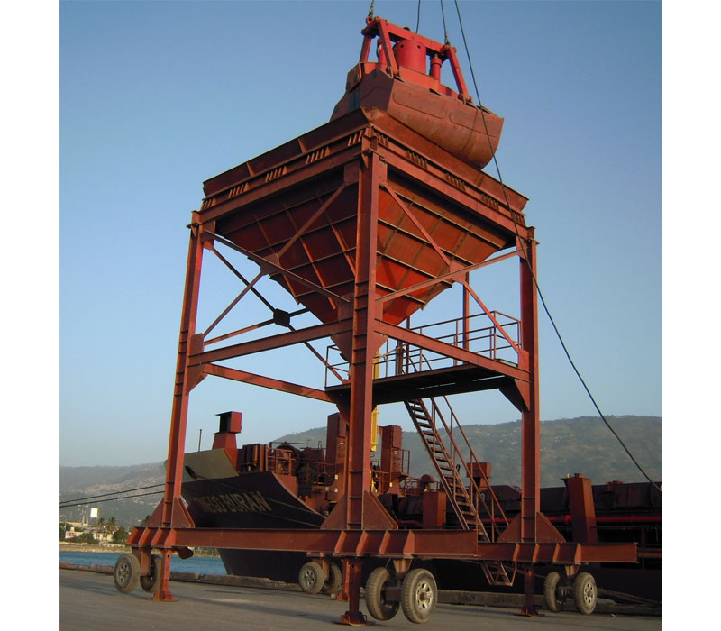

La oferta técnica queda ordenada por frente de negocio.
EQUIM-GRUMO concentra su experiencia en tres líneas de trabajo: procesos agroindustriales de cereales, manejo portuario de granos y servicios de izaje, manipulación y montaje.
Equipos para procesos agroindustriales.

Desarrollo de equipos para recibo, elevación, transporte, pre-limpieza, limpieza, sistemas de secamiento, almacenamiento y molinería de arroz.
- Elevadores de cangilones.
- Transportadores de banda y sinfín.
- Prelimpiadoras y limpiadoras de zaranda.
- Hornos ciclónicos y sistemas de secamiento.
- Empacadoras y equipos auxiliares.
Manejo y transporte de granos en puerto marítimo.

Soluciones para el manejo, despacho y almacenamiento de granos en puertos marítimos, con equipos pensados para operación continua y movimiento de graneles.
- Tolvas graneleras.
- Elevadores y transportadores para graneles.
- Equipos para llenado de café a granel en contenedores.
- Sistemas de despacho y almacenamiento portuario.
Servicios de izaje, manipulación y montaje.

Flota propia de grúas telescópicas tipo PH de 30, 50, 70, 75 y 100 toneladas, además de camión grúas y equipos auxiliares para montaje y movilización.
- Grúas telescópicas tipo PH.
- Camión grúas de apoyo.
- Gatos hidráulicos con motobomba.
- Montaje y movilización para proyectos en campo.